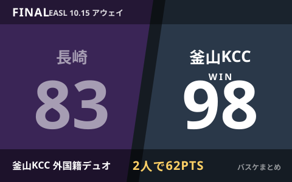

長崎ヴェルカ、EASL初陣は黒星 外国籍デュオに62得点許し釜山KCCに83-98

昨季のB1王者・長崎ヴェルカが、東アジア・スーパーリーグ（EASL）2026-27シーズンに初参戦しました。初戦の相手は韓国KBLを制した釜山KCCイージス。結果は83-98で敗戦となり、相手の外国籍デュオに62得点を許したほか、最終クォーターに失速する苦しい内容となりました。同じく日本勢として参戦するアルバルク東京が開幕戦をサウスゴビ・ブロンコスに113-78で快勝しているのとは対照的な黒星スタートです。
釜山KCCの外国籍デュオに62得点、終盤に失速
長崎ヴェルカはKBL（韓国プロバスケットボールリーグ）で2025-26シーズンを制した釜山KCCイージスと対戦し、83-98で敗れました。報道によると、釜山KCCの外国籍選手2人に合計62得点を許す展開となり、長崎は最終クォーターで失速したと伝えられています。最終的な点差は15点でした。
| 項目 | 内容 |
|---|---|
| 最終スコア | 長崎ヴェルカ 83 - 98 釜山KCCイージス |
| 対戦相手の実績 | 2025-26シーズンKBLチャンピオン |
| 敗因として報じられた点 | 外国籍デュオに62得点を許す／最終クォーターに失速 |
「B.LEAGUE王者としてのプライド」を掲げての初陣
長崎は今季、昨季のB1王者としてEASLに初めて参戦しています。試合前には馬場雄大選手が攻守にフル稼働する重責について言及し、熊谷航選手も「B.LEAGUE王者としてのプライドを示したい」と、覚悟や責任を持って自分たちのバスケをすると意気込みを語っていたと報じられていました。初戦は黒星となりましたが、国際大会での連戦が続くなかでの立て直しが注目されます。
日本勢の中でアルバルク東京は対照的な白星発進
同じくEASLに参戦するアルバルク東京は、10月14日の開幕戦でサウスゴビ・ブロンコス（モンゴル）と対戦し113-78で快勝しています。テーブス海と平岩玄がコンディション不良でベンチ外となる9人体制でしたが、第1クォーターから35-12とリードを広げる好スタートを見せました。日本勢3クラブ目の琉球ゴールデンキングスの初戦は10月28日に予定されています。
EASLとは
東アジア・スーパーリーグ（EASL）は、日本・韓国・台湾・フィリピン・モンゴルなどのクラブが参加する国際クラブ大会です。長崎ヴェルカは国内のB.PREMIERと並行してEASLを戦うことになり、過密日程のなかでのコンディション管理と連戦への対応が今後のポイントになりそうです。
Q. 長崎の次のEASL戦はいつ？
A. 次節の日程は現時点で確認できていません。最新のスケジュールはEASL公式または長崎ヴェルカ公式サイトでご確認ください。
出典：バスケットボールキング「"9人体制"のA東京がEASL白星スタート…長崎は韓国王者に黒星、琉球は28日初戦」／BASKET COUNT「外国籍選手コンビに62得点を奪われた長崎ヴェルカ、最終クォーターに失速しKBL王者の釜山KCCイージスに15点差で敗れる」ほか
https://basketballking.jp/news/world/20261015/637830.html
https://basket-count.com/article/detail/276623